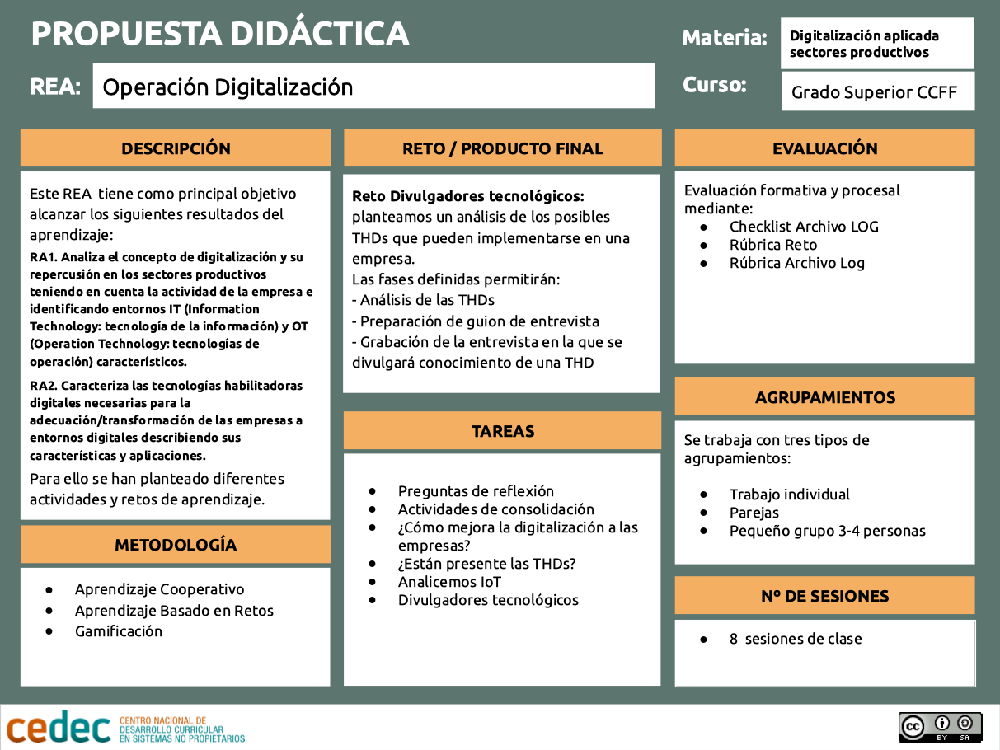

Propuesta didáctica
Este recurso educativo abierto forma parte de uno más amplio que corresponde a un curso del módulo profesional de Digitalización aplicada a los sectores productivos, para ciclos formativos de grado superior. Se organiza en cinco operaciones que incluyen los diferentes resultados de aprendizaje del módulo, y que permiten ir alcanzando diferentes niveles de formación en digitalización hasta alcanzar la credencial completa que nos permite obtener el certificado de experto o experta de digitalización.
En esta primera operación nos adentramos en lo que conlleva implementar un proceso de digitalización en una empresa, los entornos en que se pueden llevar a cabo, las tecnologías habilitadoras digitales existentes que podremos utilizar y desarrollaremos un poco en más detalle Internet de las cosas (IoT).
